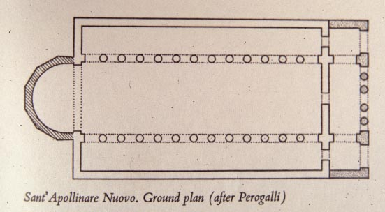
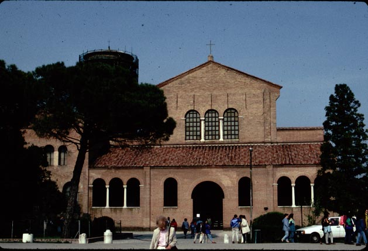
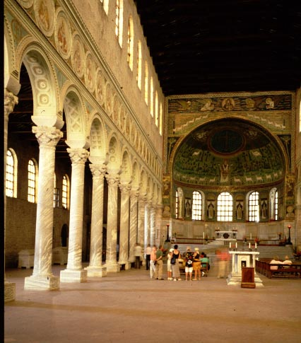
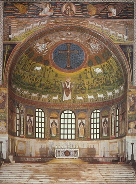
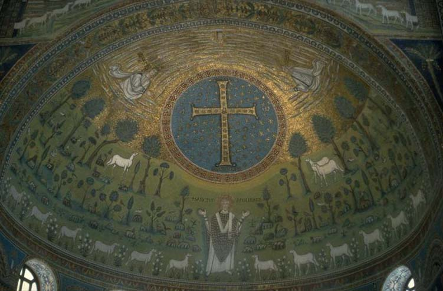

As part of their building efforts, the Byzantines also built a
church
dedicated to St. Apollinaris, the founder of Ravenna's church, in the
place
where he had supposedly been buried. This church was to the south
of the city of Ravenna, next to the port of Classe.

Ground plan of the church.

The main entrance to the church.

The interior of the church, looking east toward the altar.
Note
the gray and white striped columns, which are made of marble that was
imported
from Constantinople (presumably at great expense).


Details of the mosaics around the altar, showing St. Apollinaris (above) dressed like an archbishop, and below, in the spaces between the windows, four of Ravenna's most notable bishops up to that point.